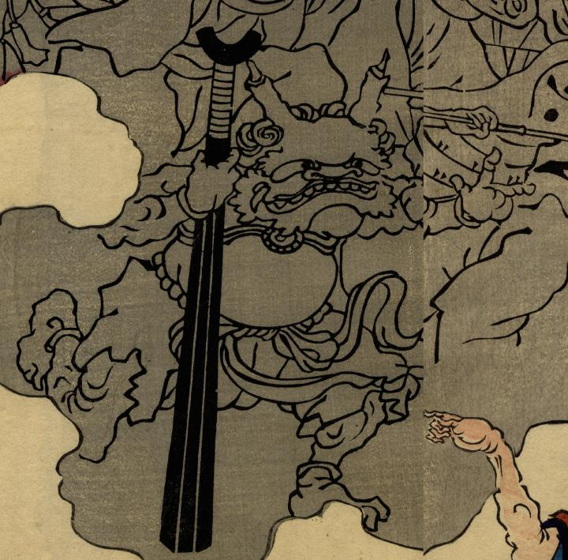

金棒を持った鬼。２本の角が生え、唐風の鎧を身につけている。左腕を前に出し、駆けているように見える。
出典：親書誌：U426_nichibunken_0268：四天王化物蝋燭；シテンノウ バケモノ ロウソク／日付：2014／資源識別子：U426_nichibunken_0268_0008_0000
Copyright (c)2010- International Research Center for Japanese Studies, Kyoto, Japan. All rights reserved.